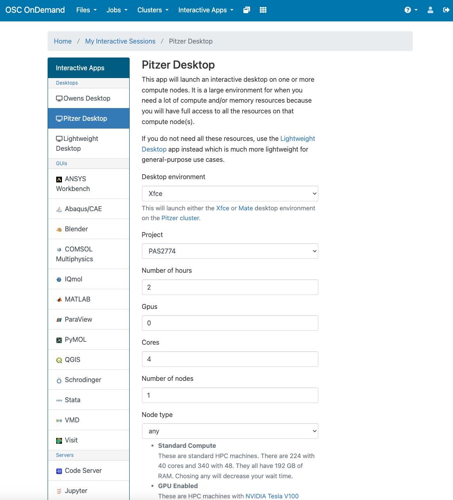
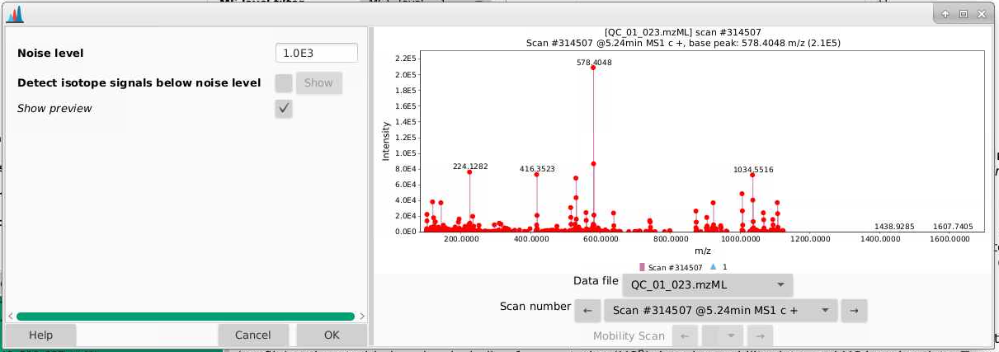

chmod a+x MZmineSpectral pre-processing with MZmine
1 Introduction
Now that we’ve gone through the collection of LC-MS metabolomics data, we will take our raw datafiles and convert them into a feature table.
1.1 Our data
We are going to be using some sample data coming from the my lab. These samples are methanolic extracts (more details about their creation are described in Dzakovich et al., Plant Genome 2022) of tomatoes with 3 different genotypes:
- OH8243: a typical processing tomato
- LA2213: a wild currant tomato that is high in steroidal alkaloids
- HATS: a high alpha tomatine selection (HATS) that came from a breeding scheme crossing the previous two tomatoes and selecting fruits high in steroidal alkaloids.
Additionally, we have quality control (QC) samples that are made from pools of each of the tomato extracts, and process blanks (PB) which underwent the same extraction process but instead of adding tomato, added an equivalent mass of water.
The extracts were analyzed using a C18 column in positive ion mode on an Agilent 6546 QTOF-MS. The gradient portion of our method is from 0.5 - 7.5 min.
You can find a link here to a OneDrive folder that contains all the raw data files to download.
Samples are named with the following structure:
- First term is the type of sample (OH8243, LA2213, HATS, QC or PB)
- The second 3 digit number starting with 4XX, 6XX, or 8XX is a plot code. The QCs and PBs have a two digit number which represents tells you which replicate it is.
- The last number is the run order
I have not given you every sample from this run, so the run order numbers won’t be continuous. There are 12 of each of the tomato varieties, 6 QCs, and 3 PBs. If your MZmine is getting bogged down, you don’t need to use all of these samples, you can practice in using just the QCs. I will give you full feature tables for the data analysis next steps.
Download the raw data files and put them in a known location on your computer.
2 Convert instrument data files to open source format
Different MS vendors have their files in different formats. We are going to be using today some data that was collected on an Agilent LC-MS, and the file extension here is .d. We are going to use the software MSConvert from ProteoWizard to convert our files into an open source file format with the extension .mzML.
2.1 Download MSConvert from ProteoWizard
If you don’t have ProteoWizard, you can download it here: https://proteowizard.sourceforge.io/. Once you download the program, open MSConvert.
2.2 Select files for conversion
- Open up MSConvert and in the top left corner of the program, select the files you want to convert. Your directories are going to be different than mine depending on where your files are stored.
- Select where on your computer you want the converted files to go, and indicate that location in Output Directory.
2.3 Set parameters for conversion
- Uncheck zlib compression
- We are going to convert our profile into centroided data which I think makes the deconvolution in MZmine easier. We will do that by under Filter, selecting Peak Picking, and picking the Vendor option under Algorithm. Here, we only have MS1 data so we only want MS level 1. We will add this to the table below.
- The more files you have, the longer this will take, you can indicate that convert more than 1 file in parallel. Doing 4 at a time, about 40 samples took my lab data processing computer (which has a 128 MB RAM and 16 cores) a couple of minutes.
3 Import into MZmine
3.1 Using MZmine at OSC (Ohio Supercomputer Center)
Some parts of the MZmine pre-processing can be quite ram intensive and may struggle to run on your laptop. To solve this problem, you can run your deconvolution on a supercomputer. I’m providing here some instructions on how to do this at OSC.
3.1.1 Create an OSC account
You can create an account at OSC at this link.
3.1.3 Log onto OSC
Navigate to https://ondemand.osc.edu/ and log in. Make sure you are using PAS2568.
3.1.4 Download the portable Linux version of MZmine
MZmine has a portal Linux version which you can download while on OSC, and then use. Navigate to https://ondemand.osc.edu/. You can open a Pitzer desktop session.
You can use the parameters below for launching the Pitzer desktop. Make sure you select project PAS2568. You can adjust how many hours you need based on what time you have. Then click “Launch” in blue at the bottom.

If Pitzer is not working, you can open up an Owens desktop and it will work the same. Just use the same paramteres.
Once you are in Pitzer desktop, you can open an internet browser and navigate to https://github.com/mzmine/mzmine3/releases/tag/v3.9.0. At the time I put this tutorial together, the most recent version of MZmine is 3.9.0. Download the version for the Linux portable version.
You can actually skip the download process as I put the portable version fo MZmine 3.9.0 in /fs/ess/PAS2568/MZmine
3.1.5 Open MZmine
Once you download MZmine, unzip the file, right click on the bin directory and select Open a terminal here.
Then in your terminal, execute the following code one line at a time:
./MZmineThe MZmine GUI should now be open.
3.2 Using MZmine on your own computer
If you don’t have MZmine, you can download it at this link: https://mzmine.github.io/.
MZmine has extremely good documentation, so if you want to read more about any particular parameter, you can do so here: https://mzmine.github.io/mzmine_documentation/index.html.
4 Import your data
Once you’ve opened GUI, go to Raw data methods > Raw data import > mzML and select all of your files to import. You should now see all your data files in the left hand column of MZmine. You can re-order them if you like by dragging them around.
Note
If you are working on OSC, I have put all of the .mzML files on /fs/ess/PAS2568/mzML-centroid.
Once samples are loaded, you can begin to look at them. For example, I can highlight all of my QC samples and draw out a base peak chromatogram for each to see how similar they are. I can do this by selecting the samples:
- right clicking and selecting
Show chromatogram - indicate Specific raw data files (those that are highlighted)
- select Base peak intensity
- provide a m/z range (or auto-range)
How to move around figures in MZmine:
Scrolling and zooming
- Highlight Regions to zoom in
- Left click and drag on y-axis to expand/contract height
- Scroll on x-axis to expand/contract width
- Left click and drag on x-axis to move view window
- Left click and quick drag up and release will reset zoom
Double click to extract spectra at any point
Side toolbar
- Toggle in and out of centroid/continuous mode
- See where ions were detected
- Toggle legend on or off (key)
- In the figure legend, you can click the name under the chromatogram to bold one line at a time
- Right click to add or remove chromatograms (can only add or remove one at a time)
4.1 Save your project
You can save your project after different steps, this process can take a little while, but it allows you to go back to any part of your workflow and look at results or make changes.
In the top toolbar, navigate to Project > Save project as and put your project files in an appropriate directory on your computer. A good place would be in the parent directory where your data files are.
You can save your file as Referencing (small) given that you don’t move where the input files are. This takes up less space but can lead to later incompatibility projects if files get moved. The status bar at the bottom of MZmine will tell you your current status.
5 Mass detection
We are going to do our parameter optimization on just our QC samples as this process will go more quickly. Once you are happy with how the data looks, you can apply those parameters to your whole dataset.
The first set of parameters we pick are to determine what our noise cut off is for an ion. We want to pick the intensity at which we are seeing a signal at approximately every mass. These are not real signal coming from in this case our tomatoes, but are background noise that we want to remove.
Navigate to Raw data methods > Mass detection.
Raw data files: select the samples you want to start deconvoluting. If you are setting parameters for the first time, doing this on just your QCs will make the process faster. Then when you are happy with your parameters, you can apply them to all your files.
Scan filters: First we will narrow down the retention time range that is for the gradient portion of our method, here from 0.5 - 7.5 min. These files contain only MS1 and are in positive mode
Scan types (IMS): all scan types, this is not relevant here as we do not have ion mobility data
Mass detector: centroid (since we have centroided data). If we click the Setup button, we can try using different noise cutoffs and see how that affects the ions that are selected.
- Pick a sample (a QC is a good choice and a process blank would be a bad one) and a scan to start. I’m picking a scan in the part of my chromatogram where I know I have lots of signal. Each of the red points indicates an ion that is detected in this spectrum.

- If we zoom in, we can better see the true noise level. I like to think about the noise level being the intensity at which there is a signal at every massRight now, our noise is set to 1000 counts, and it looks like the noise in the is between 500-1000 counts. You can play around with the noise level and see how that affects which ions are selected.

- There is a natural tendency to want to set the noise level to be low so that you’re sure not to miss important analytes. I warn you against this approach. Having lots of noise is your dataset is going to create more problems for you than ensuring you’re capturing low intensity signal. In general I’d suggest setting this slightly higher than you think, and then adjusting if necessary. I am going to leave my noise level here at 1000 counts.
6 ADAP chromatogram builder
Now its time to draw out chromatograms. We do that by going to Feature detection > ADAP chromatogram builder
Raw data files: make sure you pick your files you’ve used for mass detection.
Scan filters: pick a retention time range that is the same for mass detection
Minimum consecutive scans: this tells you how many scans does your ion need to be detected in, above the noise thresholds you are going to set next. So for example, if you set this to 5, you need to have 5 scans where your ion is present above your noise threshold.
Minimum intensity for consecutive scans: what is the minimum intensity that an ion needs to be in a row - I usually make this a bit higher than my chemical noise that we set back in mass detection. Here I am picking 2000 to get out of the noise.
Minimum absolute height: what is the minimum height a peak needs to be (the max of that peak) to be considered a peak. Here I am picking 5000 to get out of the noise but this could be set lower.
m/z tolerance (scan to scan): what is the mass error you are willing to tolerate within a sample, it is important that you put values for both m/z and ppm here, and I’m picking 0.008 m/z and 10 ppm, which are both a little more variable than I expect my data to be.
Suffix: this will be added to the end of your file names. Here I usually use “chromatograms”.
After you set these parameters are run the ADAP chromatogram building, you will get feature lists for each sample, which you can see in the Feature list tab. You can right click on one of your samples (a QC would be a good choice), select Open feature list, and look through it to see what kinds of peaks are being picked. Based on what you see here, you can adjust your parameters. For example, if you find all your low intensity signals don’t look like peaks, you can play around with increasing your thresholds.
7 Chromatogram deconvolution
Now that we have chromatograms, we need to integrate peaks. We can do that by going to Feature Detection > Chromatogram resolving > ADAP resolver.
Feature lists: make sure you pick your files have come out of the ADAP chromatogram builder
Suffix: this will be added to the end of your file names. Here I usually use “resolved”.
Original feature list: I am setting this to REMOVE, this will delete the last feature list you made. If you select KEEP, the old feature lists per sample that end of “chromatograms” will remain.
MS/MS scan pairing: we don’t have MS/MS data here so we can uncheck this
Dimension: retention time - we want to resolve based on retention time (we don’t have ion mobility data here)
S/N threshold: how low can you signal to noise be and still be considered a peak. 10 is a good choice as it represents a standard limit of quantitation (you can read more about signal to noise and typical limits in this nice article by Thermo Fisher).
S/N estimator: I use the intensity window SN
Min feature height: the smallest height that would be considered a feature. I’m using 5000 here.
Coefficient/area threshold: a tool for filtering out bad peaks, a good number to start at here is about 100.
Peak duration range: how wide can a peak be? This is helpful for really tailing peaks (and reiterates again why we are using height instead of area). I am setting this to 0.01-0.25
RT wavelet range: what is the range of wavelets used? You can play around with this to see how changing these parametesr will affect which peaks get selected. I am setting this to be 0.01-0.2. I find this parameter makes a big difference in how many features you get at the end.
It helps to look at the preview here - you can tell how the parameters you set are affecting what is considered a peak. You want the algorithm to grab peaks and not grab non-peaks. Here are some examples:
Once you run this module, you can look at the feature list by picking a sample (in this case with the suffix “chromatograms resolved”), right click, and select Open feature list. Then you can sort by height and see how your peak shapes look. If you find lots of peaks with low heights look bad, you can adjust that threshold. If peaks like they’re not being separated, you can change the min ratio of peak top/edge, or play around with other parameters.
For me, this step took about 10 min to run 40 samples when I did this on a supercomputer with 1 node and 4 cores. Depending on your memory and cores, this will be likely be considerably slower on your laptop.
When you are happy with what your peaks look like, you can move on to isotope grouping.
8 Isotope grouping
Now that we have deconvoluted our chromatograms, we can group features that belong to the same metabolite using the isotope grouper. If you look at the spectra below, based on our experience, we can tell that each of these ions belongs to the same feature. We can tell this because it has a characteristic isotope distribution. We want MZmine to also lump all of these features together as one, since they all belong to the same metabolite.
If we look at the example above, we want 1034, 1035, 1036, 1037, 1038 all to be collapses together since they all belong to the same metabolite. We can do this across our dataset by going to Feature list methods > Isotopes > 13C isotope filter (formerly isotope grouper.
Feature lists: pick the output of chromatogram deconvolution, in this case the lists with the suffix “chromatograms resolved”
Name suffix: this will be added to the end of your file names. Here I usually use “deisotoped”.
m/z tolerance (intra-sample): how different can two m/z values be and be considered the same feature? Tolerances can be provided in m/z (absolute different) or ppm (relative difference dependent on mass), and MZmine will use whichever of these is larger. Here I am going to use 0.008 m/z and 10 ppm. Sometimes for high and low intensity signals, you get mass errors that are outside the typical 3-5 ppm range expected on a QTOF, and I have found setting the mass tolerance parameters too tightly leads to feature duplication.
Retention time tolerance: how aligned different can two retention time values be between a feature and its putative 13C isotoplogue. This is different than retention time alignment. I am going to set this as 0.03 min (1.8 seconds) since you should have very good retention time alignment between isotoplogues.
Mobility tolerance: not relevant here, unchecked
Monotonic shape: requires a typical 13C isotope distribution. You can check this or not, I am going leave it unchecked.
Maximum charge: what charge states are you willing to accept? I will set this to 2.
Representative isotope: which isotope should represent the feature? I pick the Most intense
Never remove a feature with MS2: can uncheck as we don’t have MS2 data here
Original feature list: I am setting this to REMOVE, this will delete the last feature list you made. If you select KEEP, the old one will remain.
9 Alignment
Your samples are going to be aligned relative to your first sample, so make sure that the QCs are at the top of your feature list panel. We can align our samples by going to Feature List methods > Alignment > Join aligner.
Feature lists: select the ones from the isotope grouping, in this case those that end in “chromatograms resolved deisotoped”.
Feature list name: this is the name of your feature list, I am going to call this “Aligned feature list”.
m/z tolerance (sample-to-sample): how different can sample m/z be to be considered the same feature. Tolerances can be provided in m/z (absolute different) or ppm (relative difference dependent on mass), and MZmine will use whichever of these is larger. Here I am going to use 10 ppm though you could go lower. Sometimes for high and low intensity signals, you get mass errors that are outside the typical 3-5 ppm range expected on a QTOF.
Weight for m/z: how much emphasis do you want to weight on a m/z match over a retention time match? I am going to set this to be 75.
Retention time tolerance: how misaligned can peaks be between samples and still be considered the same feature? Take a look at your data to see what kind of shifting you’d expect, I am going to set this to be 0.1 min.
Weight for RT: how much emphasis to put on a retention time match. I am going to set this to be 25, consistent with what MZmine recommends (to weight a mass match higher than a retention time match.)
Mobility tolerance: not relevant, we don’t have mobility data
Mobility weight: not relevant, we don’t have mobility data
Require same charge state: requires that MZmine has assigned the same charge state to features, I am going to leave this unchecked.
Compare isotope pattern: should isotope be added into the score, I will leave this unchecked
Compare spectra similarity: should spectra be compared, this is more relevant for MS2 data which we do not have, so I will leave this unchecked
Original feature list: if you do this multiple times, you might want to remove other older feature lists. I am going to select KEEP here since we’re doing this for the first time.
Now, instead of having lists per sample, we have one aligned feature list. We can right click this list and see what the features (Open feature list) are how many feature there are (Show feature list summary).
10 Gap filling
Now that we have aligned our samples, we have have MZmine go back and specifically draw out chromatograms for all of the features we have evidence for. This recursive process works to reduce the risk that a feature is present in a sample but not detected. We can do this by going to Feature list methods > Gap filling > Peak finder.
Feature lists: pick the aligned feature list from the main window.
Name suffix: I usually add gap-filled
Intensity tolerance: how much can your peak shape deviate from a good looking peak. 20% is a good default here
m/z tolerance (sample-to-sample): how different can sample m/z be to be considered the same feature. Tolerances can be provided in m/z (absolute different) or ppm (relative difference dependent on mass), and MZmine will use whichever of these is larger. Here I am going to use 10 ppm though you could go lower. Sometimes for high and low intensity signals, you get mass errors that are outside the typical 3-5 ppm range expected on a QTOF.
Retention time tolerance: how misaligned can peaks be between samples and still be considered the same feature? Take a look at your data to see what kind of shifting you’d expect, I am going to set this to be 0.1 min.
Minimum scans (data ponts): how many scans does your feature need to be seen in? Typically is set lower than in the ADAP chromatogram builder and the chromatogram deconvolution. Since we set that to be 5 I am going to pick 3 here.
Original feature list: if you do this multiple times, you might want to remove other older feature lists that you gap filled. I am going to select KEEP here.
In the table view of the feature lists, the gap filled values will now be shown with a yellow status
11 Filter for isotopic pattern
We want to make sure that now there are at least 2 peaks that make up an isotopic pattern. We can do that by going to Feature list methods > Feature list rows filter.
Feature lists: pick the output from gap filling
Name suffix: what do you want this new list to be called, I am adding “2 isotopes” to the end of my list name.
Minimum features in an isotopic pattern: I am checking yes and 2.
The rest you can leave as it is. I find this step removes a lot of features.
12 Remove duplicate features
MZmine (aided by our setting of parameters) does its best to try and collapse features that belong to the same metabolite together. But this happens imperfectly. Here we are going to go through our feature list and remove features that are duplicated. Having features duplicated in metabolomics is a problem because we then have to do more multiple testing correction than is really needed. It also makes our data bigger than it needs to be.
We can do this by navigating to Feature list method > Feature list filtering > Duplicate feature filter.
Name suffix: what suffix do you want to add to your de-replicated list. I am adding “deduplicated”.
Filter mode: you can pick between three different methods: old average, new average, and single feature. Each work slightly differently.
m/z tolerance: how different can m/z be between features to be considered the same
RT tolerance: how different can retention times be between features to be considered the same
Require same identification: we won’t check this since we don’t have IDs here
Original feature list: if you do this multiple times, older feature lists will be removed. I am going to select KEEP here.
I find that if you’ve set parameters appropriately, this step shouldn’t remove that many features.
13 Export your feature table
Now you are ready to export your feature table out of MZmine for some manual cleanup in Excel before analysis in MetaboAnalst.
You can export your data by going to Feature list methods > Export/Import > Export CSV (legacy MZmine 2).
We want to export at minimum the following parameters:
- Export row: this is a row ID
- Export row m/z: this is the average m/z for that feature
- Export row retention time: this is the average retention time for that feature
- Peak height: in general I used peak hight for metabolomics over peak area as it is less sensitive to distortions in peak shape which are relatively common
There are other parameters you can extract but in general I find them not to be useful.
Indicate a file path which includes your file name and your .csv file will be in the location you indicated.
Navigate to your file and open it so you can see what it looks like:
- The first 3 columns are going to be row ID, row m/z, and row retention time
- The next columns will each be one of your samples
- The rows are each of your features
- The cells contain values of the height for each feature (i.e., row m/z and retention time combination) in each sample
I would recommend that you store this file exactly how it is, and when you want to make changes to it, you create a file with a new name indicating what changes have been made. This allows you to go back to the original data should you need to.
Before you close MZmine, you can also go to your final feature list, right click and select Show feature list summary and you can see all your processing parameters. If you click Export, you can save these parameters as a text file to refer back to in the future. I highly recommend doing this.
14 Removing features coming from our blanks
Here, our goal is to remove features that are coming from non-sample parts of our analysis. Since we have extracted and run process blanks (i.e., samples that have gone through the extraction process but contain no sample), we have an example of what kind of features are coming from our background. Now we will remove those features.
The criteria I tend to use for removing features coming from blanks are that:
- Features where the average intensity in the QCs divided by the average blank in a QC are below 10 are discarded.
Worded in a different way feature needs to be at least 10x as prevalent in the QC as compared to the blank. So to figure this out we can:
- Create a new column where we calculate the average intensity of every feature in the QCs (i.e., avg_QC)
- Create a new column where we calculate the average intensity of every feature in the process blanks (i.e., avg_PB)
- Create a new column where we divide average intensity in the QCs by average intensity in the process blanks (i.e., avg_QC_div_avg_PB)
When doing this, I like to move my PB and QC columns to the front of my dataset so its easier to see.
Then, we can sort avg_QC_div_avg_PB from small to large, and remove all of the features where this column has a value of less than 10. Note that when your avg_PB is zero, you will get an error. We don’t want to remove these features, bceause these are absent in our blanks. Keep notes of how many features this process removes.
And, now we are finished with our process blanks, so we can remove this from this dataset.
15 Removing features that are variable in the QCs
Here, our goal is to remove features that are inconsistently measured in samples that are compositionally the same (i.e., our QCs). If we can’t measure these features consistently in identical samples, we don’t really have any business making statements about them in our samples. We are going to remove all features that have a coefficient of variation greater than 30%.
Remember that coefficient of variation is calculated by:
\[ CV = standard\ deviation / average \]
We can create columns that calculate the standard deviation and average across each feature, and then divide them to calculate the CV.
Then we can remove all rows where CV_QC > 0.3 (or 30%).
16 Save your file
Now you have a feature table that after deconvolution in MZmine has been filtered to:
- Remove features that are not derived from your samples (i.e., highly abundant in your blanks compared to QCs)
- Remove features that are more than 30% variable in your QCs.
This is the file that you can use for subsequent analysis in MetaboAnalyst.
Note
If you are working on OSC, you can access any files you create from the Files tab of www.ondemand.osc.edu